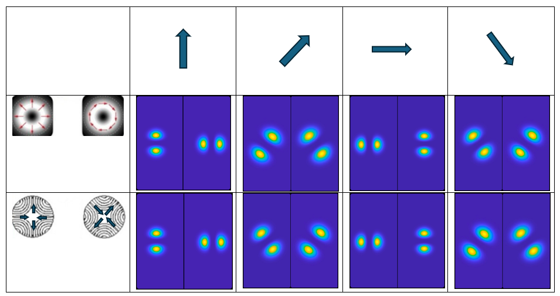
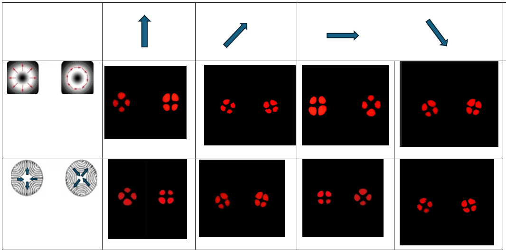
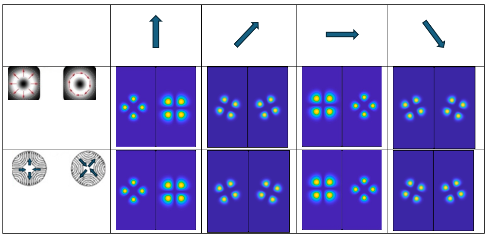
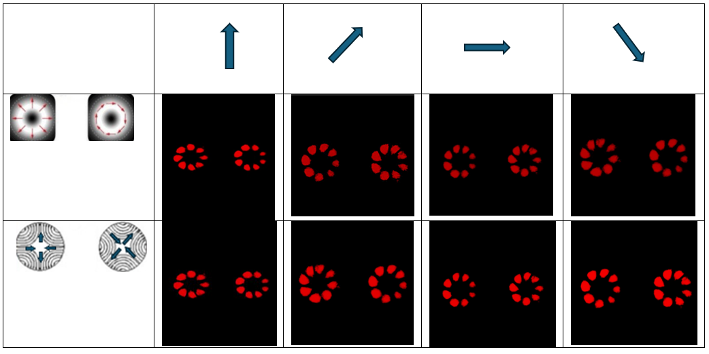
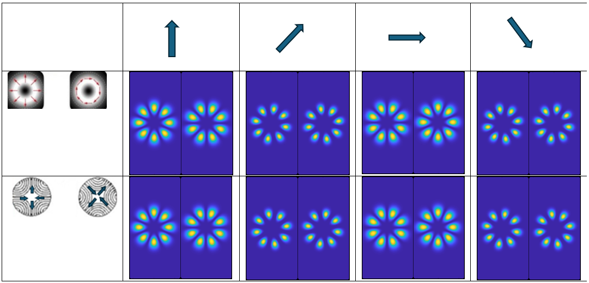

L = 1
- Shows output for the order L = 1 vortex using a HeNe laser and Sagnac interferometer.
- The bright lobes confirm radial and azimuthal polarization vortex generation.
- Pattern confirms match with theoretical prediction based on Jones calculus.

L = 1
- Theoretical model predicts two orthogonal CVBs: saddle or hybrid vortex forms.
- Jones matrix derivation yields radial/TM01 and azimuthal/TE01 patterns.
- Intensity pattern matches experimental lobes, validating model accuracy.

L = 2
- Order L = 2 vortex ring generated via SPP and QWP phase manipulation.
- Polarization rotation reveals new vortex lobes consistent with petal beam modes.
- Confirms flexible switching between complementary polarization states.

L = 2
- Model uses adjusted QWP angles to produce alternate cylindrical vector beams.
- Output beams show petal-type saddle vortices oriented orthogonally.
- Theoretical form matches the dual-petal structure observed in experiments.

L = 4
- Higher-order vortex field (L = 4) formed through use of Viavi phase plate.
- Multiple lobes indicate increased complexity in polarization vector distribution.
- Pattern symmetry confirms consistency with designed interferometer setup.

L = 4
- Theoretical structure predicts eight-lobed interference patterns for L = 4.
- Transformation rules using matrix math yield hybrid modes at 45°.
- Clearly corresponds with experimental outputs under same configurations.